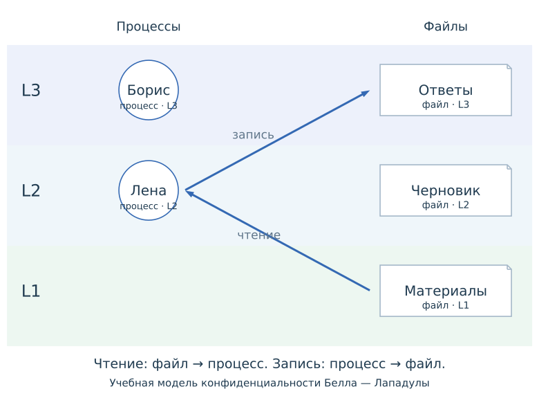

Семинар 4 — Управление доступом
Процедура получения доступа
- Идентификация: какую учётную запись предъявили системе.
- Аутентификация: подтверждено ли право пользоваться этой записью.
- Авторизация: разрешено ли выбранное действие с выбранным ресурсом.
Вход связывает сеанс с учётной записью. При обращении к ресурсу система отдельно проверяет полномочия на запрошенную операцию.
Вход на учебный портал
Упражнение 1 (Действия после входа)
Вы открыли учебный портал:
| Действие | Результат |
|---|---|
| Ввести логин | Найдена учётная запись |
| Ввести правильный пароль | Вход выполнен |
| Открыть задание своего курса | Задание открыто |
| Отправить запрос на изменение своей оценки | В доступе отказано |
Учётной записи разрешено читать задания и отправлять работы. Изменять оценки ей запрещено.
- Каким процедурам соответствуют четыре строки таблицы?
- Почему успешного входа недостаточно для изменения оценки?
- Что изменится, если ещё раз ввести правильный пароль, сохранив прежние права?
Факторы аутентификации
| Фактор | Что проверяется | Пример |
|---|---|---|
| Знание | Секрет, который человек знает | Пароль, PIN |
| Владение | Средство, которым человек располагает | Зарегистрированное приложение, аппаратный ключ |
| Биометрический признак | Измеряемое свойство человека | Отпечаток пальца |
Два этапа: для входа обязательны две последовательные проверки.
Два фактора: проверки используют два разных вида факторов.
Две проверки при входе
Для входа на портал обязательны пароль, затем отдельное секретное слово. Оба значения пользователь помнит.
Упражнение 2 (Проверки на портале)
- Сколько этапов проходит пользователь? Проверяются ли два разных фактора?
- Пароль стал известен постороннему. Что ещё нужно ему для входа?
- Вместо секретного слова портал требует код зарегистрированного приложения. Как изменится набор факторов?
Одноразовые коды
При регистрации приложения портал и приложение получают общий секрет . В TOTP приложение вычисляет код из секрета и текущего временного интервала; сервер независимо вычисляет код для проверки.
Секрет + текущий интервал → короткий код
Код действует ограниченное время. После успешной проверки сервер не принимает тот же код повторно в течение срока его действия. Приложение может создавать коды без подключения к порталу; секрет должен оставаться защищённым. [*].
Средства аутентификации
| Средство | Подтверждение при входе |
|---|---|
| Пароль | Пользователь вводит известный ему секрет |
| Код TOTP | Приложение вычисляет код из секрета и времени; пользователь вводит код |
| Passkey | Устройство использует закрытый ключ для подписи запроса сайта; сервер проверяет подпись открытым ключом |
При регистрации открытый ключ сохраняется на сервере вместе с учётной записью, а закрытый ключ остаётся в средстве пользователя. При входе сайт выдаёт новый запрос, а средство подписывает ответ закрытым ключом; сервер проверяет подпись открытым ключом.
Для использования passkey устройство может требовать PIN или биометрию. Эта проверка происходит на устройстве; закрытый ключ сайту не передаётся. WebAuthn связывает подтверждение с сайтом. [*].
Управление доступом
Управление доступом определяет, какие действия разрешены с ресурсами системы. Политика задаёт допустимые действия и условия их выполнения; система применяет её при обращении к ресурсу.

Запрос на доступ
В запросе различают субъект — активную сущность, выполняющую обращение, объект — ресурс и операцию — действие над ним.
Например, процесс редактора записывает изменения в report.txt: процесс — субъект, файл — объект, запись — операция. В операционной системе обращение выполняет процесс с определёнными полномочиями; они могут отличаться от полномочий пользователя, который его запустил.
[*].
Один файл открывают две программы
Упражнение 3 (Чтение report.txt)
Один пользователь запускает два действия:
| Действие | Кто читает report.txt | Под какой записью работает |
|---|---|---|
| Открыть файл в редакторе | Процесс редактора | Запись пользователя |
| Запустить резервное копирование | Процесс службы копирования | BackupSvc |
Для каждого случая назовите субъект, объект и операцию. По чьим полномочиям система проверит чтение?
Проверка полномочий на сервере
Монитор обращений применяет политику к запросу и обеспечивает исполнение решения. Сервер должен проверить право до изменения защищённых данных.
Упражнение 4 (Скрытая кнопка)
На учебном портале студенту запрещено изменять оценки. Разработчик скрыл кнопку изменения оценки, но сервер сохраняет любую оценку из полученного запроса.
Пользователь отправил такой запрос непосредственно, без нажатия кнопки.
- Защитит ли скрытая кнопка оценку от изменения?
- Где и перед каким действием нужно проверить право?
Дискреционное управление доступом
При дискреционном управлении доступом владелец объекта назначает и отзывает права на него.
В матрице доступа строки соответствуют субъектам, столбцы — объектам, клетки — разрешённым операциям. ACL хранит разрешения для одного объекта.

Совместный черновик
Упражнение 5 (Матрица разрешений)
Анна владеет двумя файлами и назначает права:
| Участник | Черновик | Материалы |
|---|---|---|
| Анна | Читает и изменяет | Читает и изменяет |
| Борис | Читает и изменяет | Только читает |
| Вера | Нет доступа | Только читает |
- Запишите эти разрешения в матрице:
r— чтение,w— запись,—— нет доступа. Остальные операции запрещены. - Анна разрешила Вере читать черновик. Как изменится матрица? Сможет ли Вера записать изменения?
Компиляция программы
В многопользовательской системе запустили учебную модификацию GCC:
Компилятор выполняет три действия:
- Читает исходник program.c.
- Перезаписывает файл result.o результатом компиляции.
- Дописывает строку в stats.csv — имя задано внутри программы.
Пользователь выбирает исходник и файл результата. -c означает компиляцию без компоновки; -o задаёт имя результата.
В той же системе хранится billing.csv с записями об оплате. Эти записи должны сохраняться.
Выбор выходного файла
Упражнение 6 (Запуск GCC)
GCC читает исходник, перезаписывает файл из параметра -o, затем дописывает stats.csv. Система проверяет ячейку на пересечении строки процесса компилятора и столбца файла.
| Субъект | program.c | result.o | stats.csv | billing.csv |
|---|---|---|---|---|
| Обычная программа пользователя | r,w |
r,w |
— |
— |
| Процесс компилятора | r |
w |
w |
w |
r — чтение; w — изменение, включая перезапись и добавление.
Покажите запуск вида gcc -c … -o …, который уничтожит прежние записи в billing.csv. Проверьте каждое обращение по матрице.
Ограничение прав компилятора
Упражнение 7 (Защита записей об оплате)
GCC должен читать program.c, записывать результат в result.o и дополнять stats.csv. Записи в billing.csv должны сохраняться.
| Субъект | program.c | result.o | stats.csv | billing.csv |
|---|---|---|---|---|
| Обычная программа пользователя | r,w |
r,w |
— |
— |
| Процесс компилятора | r |
w |
w |
w |
r — чтение; w — изменение, включая перезапись и добавление. Проверяется строка действующего процесса.
Измените матрицу, чтобы компилятор не мог повредить billing.csv, сохранив обычную компиляцию и сбор статистики.
MAC: обязательные уровни
При мандатном управлении доступом система применяет обязательные правила по меткам субъектов и объектов. Владелец файла не может отменить эти правила.
Модель конфиденциальности: .
Чтение: свой уровень и ниже.
Запись без чтения: свой уровень и выше.
Редактирование: обе проверки.

Стрелки показывают перенос данных: из файла в процесс при чтении и из процесса в файл при записи. Правила запрещают перенос на более низкий уровень.
[*].
MAC: допустимость операций
Упражнение 8 (Три файла с разными метками)
Процесс работает на , где . Обязательные правила: не читать выше; не писать ниже. Обычные разрешения уже выданы.
| Файл | Прочитать | Записать без чтения | Редактировать |
|---|---|---|---|
| Материалы | ? | ? | ? |
| Черновик | ? | ? | ? |
| Ответы | ? | ? | ? |
Редактирование требует чтения и записи. Отдельная запись не читает прежнее содержимое.
Заполните таблицу. Какое правило не позволяет перенести сведения из черновика в материалы?
RBAC: разрешения через роли
При ролевом управлении доступом разрешения назначают ролям, а пользователям — роли по их обязанностям.
Пользователь получает разрешения всех назначенных ему ролей.
Отзыв одной роли не снимает право, если его даёт другая роль.

[*].
RBAC: распределение ролей
Упражнение 9 (Права участников курса)
В курсе нужны следующие права; остальные действия запрещены.
| Участник | Читать материалы | Проверять работы | Менять оценки | Читать журнал |
|---|---|---|---|---|
| Лена | Да | Да | Да | Нет |
| Борис | Да | Да | Да | Нет |
| Илья | Да | Нет | Нет | Нет |
| Вера | Да | Нет | Нет | Да |
- Предложите роли и назначения, которые дают эти права.
- Лена переходит к чтению материалов и журнала. Как изменить её назначения? Назовите разрешённый и запрещённый запрос для проверки результата.
[*].
Совместное применение политик
При сочетании политик запрос должен пройти каждое обязательное ограничение. Разрешение одной политики не отменяет запрет другой.
Упражнение 10 (Три запроса)
Чтение разрешено через роль или личное разрешение в ACL. Обязательная политика дополнительно запрещает читать материал выше уровня процесса. Уровень 2 выше уровня 1.
| Запрос | Через роль | Через ACL | Уровень процесса | Уровень материала |
|---|---|---|---|---|
| А | Да | Нет | 1 | 1 |
| Б | Нет | Да | 1 | 2 |
| В | Да | Да | 2 | 1 |
- Определите решение для каждого запроса.
- Для запроса В отозвали роль. Изменится ли решение? Какие разрешения нужно отозвать, чтобы закрыть доступ?
[*].
Дополнительные задачи
Дополнительно: перенос приложения
Приложение TOTP хранит секрет . Оно и сервер независимо вычисляют короткий код из и текущего временного интервала. Одинаковые секрет и интервал дают одинаковый код.
Упражнение 11 (Секрет на двух телефонах)
Для входа портал требует пароль, затем код TOTP. Приложение показывает код без проверки PIN или биометрии.
При переносе на новый телефон секрет скопировали. Старое приложение осталось работоспособным, настройки портала не менялись.
- Сможет ли старое приложение создавать подходящие коды?
- Достаточно ли сменить пароль портала, чтобы старое приложение перестало создавать подходящие коды?
Дополнительно: права на сервере печати
Упражнение 12 (Отзыв роли)
На сервере печати разрешения объединяются из всех назначенных ролей.
| Роль | Печатать | Поднять в очереди | Перезапустить сервер |
|---|---|---|---|
| Обычный пользователь | Да | Нет | Нет |
| Опытный пользователь | Да | Да | Да |
| Техник | Нет | Нет | Да |
Сотруднику назначены «Опытный пользователь» и «Техник». Теперь ему нужна только печать.
- Администратор снял роль «Техник». Какие операции остались? Достигнута ли цель?
- Измените только назначения ролей, чтобы оставить печать. Разрешения самих ролей менять нельзя.
Дополнительно: разделение служебных полномочий
Основной процесс компилятора читает program.c и перезаписывает выбранный пользователем файл результата. После успешной компиляции отдельный процесс статистики добавляет строку в фиксированный stats.csv. Файл billing.csv ни одному из процессов не нужен.
Упражнение 13 (Два служебных процесса)
Обычная программа пользователя имеет r,w на program.c и result.o, а на stats.csv и billing.csv прав не имеет. r — чтение, w — изменение, включая добавление и перезапись.
- Составьте матрицу прав обычной программы, компилятора и процесса статистики. Первую строку сохраните, остальным выдайте необходимые права.
- Проверьте обычный запуск с результатом result.o и попытку выбрать stats.csv через
-o. При обычном запуске прежние строки статистики должны сохраниться.
[*].